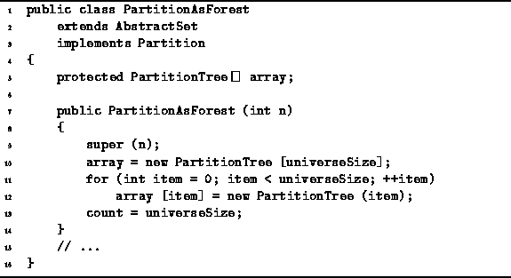

Data Structures and Algorithms
with Object-Oriented Design Patterns in Java
Data Structures and Algorithms
with Object-Oriented Design Patterns in Java
Program  gives the code
for the PartitionTree constructor.
The constructor creates a tree comprised of a single node.
It takes an argument which specifies the element of the
universal set that the node is to represent.
The parent field is set to null
to indicate that the node has no parent.
Consequently, the node is a root node.
Finally, the rank field is initialized to zero.
The running time of the constructor is O(1).
gives the code
for the PartitionTree constructor.
The constructor creates a tree comprised of a single node.
It takes an argument which specifies the element of the
universal set that the node is to represent.
The parent field is set to null
to indicate that the node has no parent.
Consequently, the node is a root node.
Finally, the rank field is initialized to zero.
The running time of the constructor is O(1).
Program shows the constructor for
the PartitionAsForest class.
The constructor takes a single argument N
which specifies that the universe shall be  .
It creates an initial partition of the universe consisting of N parts.
Each part contains one element of the universal set
and, therefore, comprises a one-node tree.
.
It creates an initial partition of the universe consisting of N parts.
Each part contains one element of the universal set
and, therefore, comprises a one-node tree.

Program: PartitionAsForest constructors.
 Copyright © 1998 by Bruno R. Preiss, P.Eng. All rights reserved.
Copyright © 1998 by Bruno R. Preiss, P.Eng. All rights reserved.